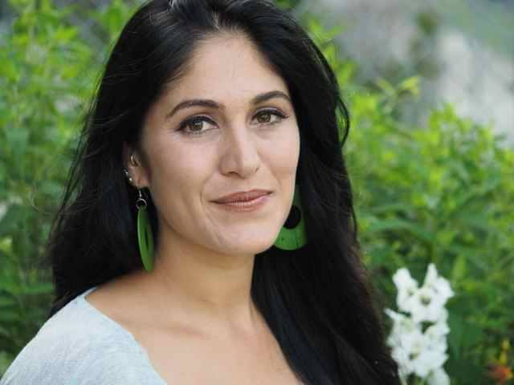

About Regeneración Lab
Laboratory for community-based and research justice orientated media, creative-critical research, and decolonial praxis.
Why Regeneración?
We are named after the anarchist newspaper Regeneración, published by the Flores Magón brothers from 1900–1918. Our lab carries forward their spirit of radical critique while centering Indigenous epistemologies and antiracism often erased in traditional anarchist narratives.
The Regeneración newspaper, in its various formations, was the highest circulating Spanish-language newspaper of its time, and sometimes included English and Italian language sections. It was read by hundreds of thousands of people across the world and often read aloud for those who were non-literate. But Regeneración was also part of a larger insurgent publishing network at the turn of the 20th century structured around community-based media, first-person accounts and testimonials, investigative reporting, translation, poetry, fiction, plays, music, comics and print art, public speeches and street corner conversations, and early engagements with photography and cinema.
Many of the authors included in these alternative newspapers were Indigenous, Black, Mestizo, Feminists, Queers, Immigrants, workers, peasants, political and poverty prisoners, religious minorities, and other people who could not get their voices covered in mainstream media. Their publications were often repressed and criminalized, with authors and interviewees risking death or incarceration to speak truth to power. We honor their legacy in opening the door for community-based media through our research justice work today.
“They tried to bury us, but they didn’t know we were seeds.”
— Mexican revolutionary dicho, circa 1910
Our Approach
We create space for research, dialogue, and cultural production that challenges settler-colonial frameworks and imagines otherwise. Our work brings together scholars, artists, community members, and activists working at the intersections of Indigenous studies, ethnic studies, border politics, environmental justice, women of color feminisms, queer theory, and decolonial theory.
Archives & Historiographies
Recovering fugitive histories, counter-memorials, and community-controlled digital collections that challenge institutional erasure and extraction.
Decolonial Methodologies
Transforming academic research from an extractive model into relational, reciprocal, and accountable community partnerships.
Popular Education
Developing open-access curriculum modules, reading groups, and public humanities workshops centering grassroots knowledge.
Water & Land Relations
Critically confronting settler resource extraction, border militarization, and environmental racism through Indigenous land defense.
Creative-Critical Praxis
Fusing creative writing, print art, counter-cartographies, film, and sonic media with rigorous social critique.
Transformative Justice
Fostering intergenerational memory, descendant community autonomy, and restorative processes that transcend institutional borders.
Director & Principal Investigator

Dr. Amrah Salomón, Founder and Director of Regeneración Lab.
Amrah Salomón
Founder & Principal Investigator • Associate Professor, UCSBAmrah Salomón is a scholar, creative writer, and practitioner of research justice working at the intersections of Ethnic Studies, Indigenous studies, Women of Color feminisms and Queer theory, environmental justice, and decolonial methodologies. Her work centers on critical-creative praxis, film and literary analysis, critical geography, archival study, community-based research praxis, and the development of frameworks that challenge extractive knowledge production.
At the Regeneración Lab, Dr. Salomón develops collaborative projects with descendant communities, mentors resident scholars and artists, and builds educational resources for students and activists.
Contact Us
We welcome inquiries regarding community collaborations, research justice initiatives, resident scholar proposals, and educational partnerships.